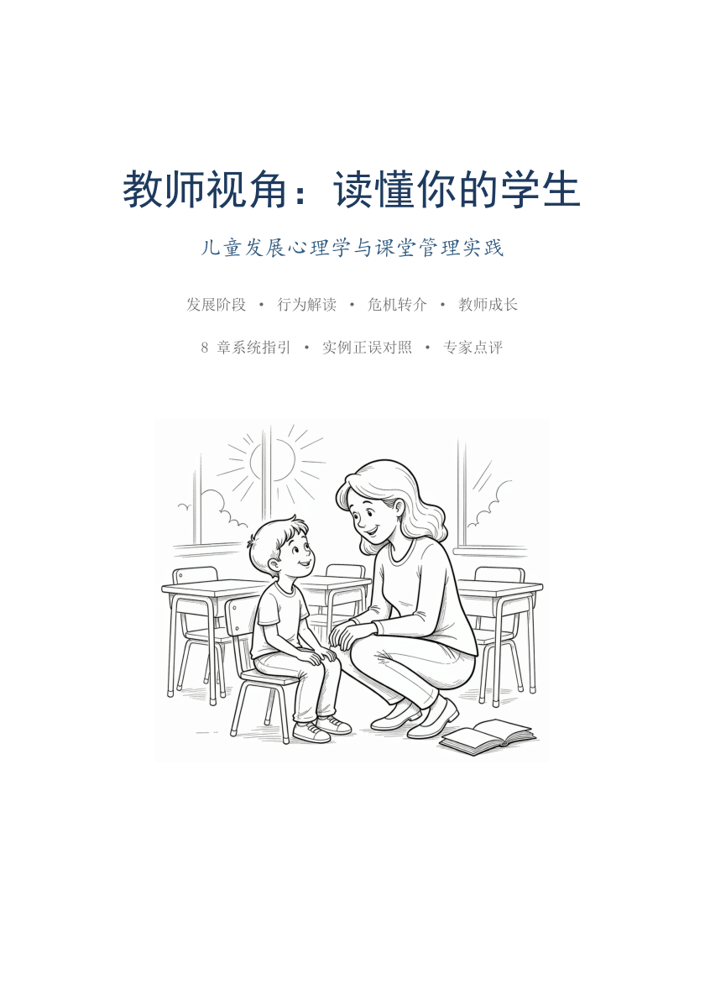
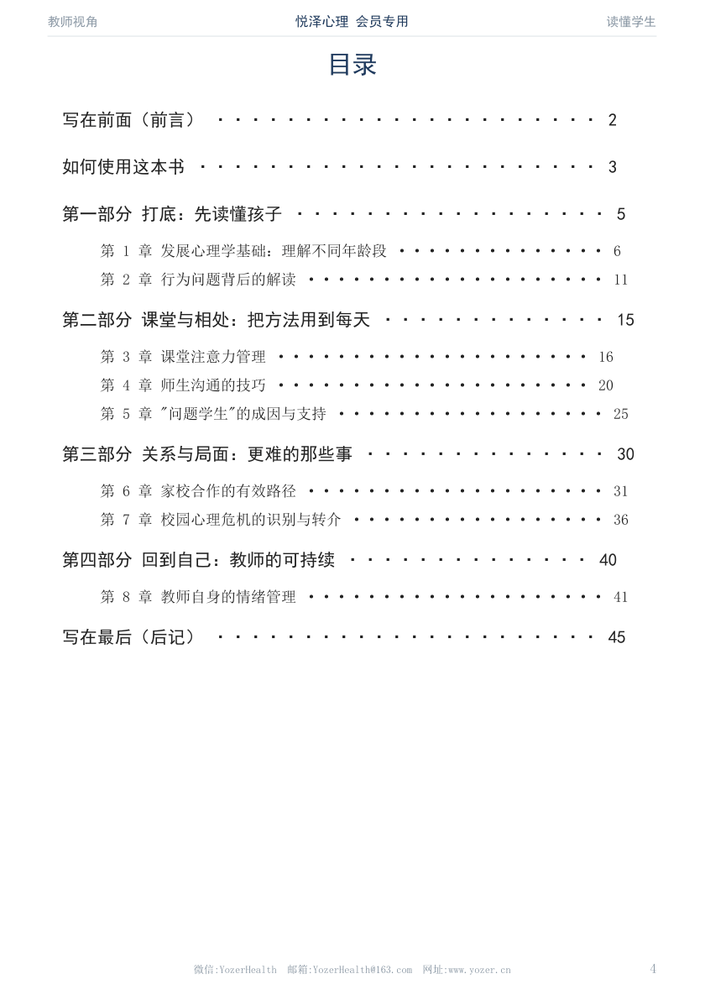
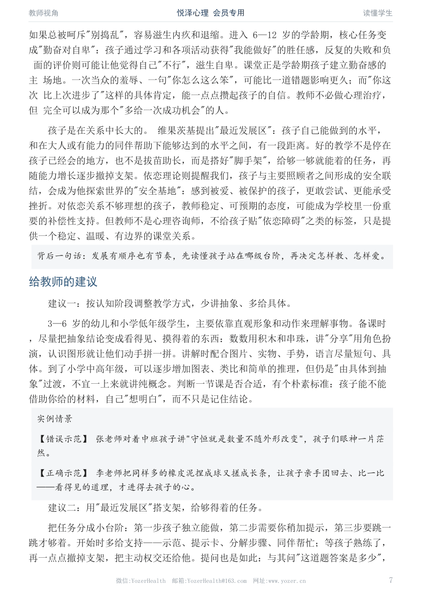
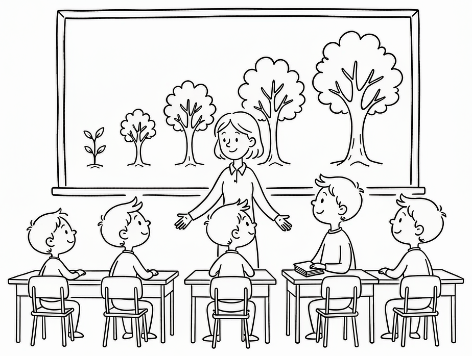

01
打底
2 章发展心理学基础、行为问题背后的解读——先读懂孩子发展的规律与行为的根源。
——儿童发展心理学与课堂管理实践
"他为什么总是坐不住？"这是系列首本面向幼儿园与小学教师的专业用书。从发展心理学基础、行为背后的解读，到课堂注意力、师生沟通、"问题学生"支持、家校合作，再到校园心理危机识别与教师情绪管理——全书贯彻一个边界：教师是识别者、支持者、转介者，不是心理咨询师或医生。

封面与内页样张来自电子书原稿
翻开这本书之前，先听听作者想说什么
"他为什么总是坐不住？"
"一句话说重了，她就哭了整整一节课。"
"三班那个孩子，怎么教都教不会，是不是就没救了？"
"家长又把电话打过来了，我该怎么说？"
这些，是幼儿园与小学教师每天都在面对的问题。备课、上课、批改、管理班级、应对家长、填写各种表——在这些看得见的工作背后，还有一个更耗神的隐形任务：读懂眼前这些孩子，读懂他们那些让人头疼的行为背后，究竟藏着什么。
本书想做的，就是把儿童发展心理学的知识，翻译成教师用得上的东西。不是让您去背理论，而是当孩子又"出问题"时，您心里多一个视角、手上多一个办法。
这本书有一条贯穿始终的立场，想先说清楚：教师是识别者、支持者、转介者，不是心理咨询师，也不是医生。我们能做的、也最该做的，是用专业的眼光看见孩子的需要，用恰当的方式支持他，并在超出教育范畴时，及时把专业的事交给专业的人。给学生贴标签、做诊断、承诺"我一定能帮他走出来"，都不是教师的职责，也常常好心办坏事。守住这条边界，您反而能更从容、更准确地帮到孩子。
全书八章，可以这样读：
第 1、2 章打底。讲不同年龄段的心理特点，以及怎样把"问题行为"看成需求的表达。这是后面所有方法的地基。
第 3、4、5 章是课堂与师生相处的实操。注意力怎么管理、话怎么说、遇到"困难学生"怎么支持——都是明天就能用上的东西。
第 6、7 章处理更难的关系与局面。家校沟通怎么不变成"告状"，以及最重要的——校园心理危机的识别与转介。这一章请您务必细读，它关系到孩子的安全，也关系到您自己如何保护自己。
第 8 章留给您自己。教师是一份高情绪投入的职业，倦怠和耗竭并不遥远。照顾好自己的情绪，不是自私，而是把这份职业长久做下去的前提。
每一章都配有学校场景的实例正误对照、一张速查表，方便您在繁忙的工作间隙快速翻用。语言尽量贴近一线，少些术语堆砌，多些"这时候我该怎么办"的具体回答。
愿每一位教师，都能少一点困惑与自责，多一点笃定与从容；愿每一个孩子，都能被站在眼前的您，真正读懂。
按“打底—课堂相处—关系局面—回到自己”四部分编排，教师视角贯穿全书
发展心理学基础、行为问题背后的解读——先读懂孩子发展的规律与行为的根源。
课堂注意力管理、师生沟通技巧、“问题学生”的成因与支持——把方法用到每天。
家校合作的有效路径、校园心理危机的识别与转介——更难的那些事，边界要清楚。
教师自身的情绪管理——照顾好自己不是自私，而是可持续地带好每一个学生。
从课堂场景切入，先理解再行动，始终守住“识别者、支持者、转介者”的角色边界
从真实课堂场景切入，说的就是您班上的事
用发展心理学讲清行为根源，不贴标签
每条配实例情景，含错误示范与正确示范
点破常见误区，避免越管越乱
从专业角度收束，讲清教师角色边界
8 章 · 附真实页码 · 点击上方按钮可快速跳转试读
以下为第 1 章完整节选，体验“场景 + 原因 + 给教师的建议 + 示范 + 点评”的编排
一年级数学课上，张老师把十颗纽扣在讲台上摆成两排：上排五颗紧紧挨在一起，下排五颗拉得开开的，足足占了上排两倍的地方。"小朋友们看一看，哪一排的纽扣更多呀？"她话音刚落，小手"唰"地举起一片，几个孩子抢着喊："下面那排多！""下面那排长得长！"张老师没有立刻说"不对"。同一道题，为什么不同的孩子答案不一样？下课铃响后，一个孩子还跑到她身边认真地说："老师，我真的觉得下面那排多，我数过了。"张老师蹲下来听完，心里忽然明白：这不是粗心，也不是没认真听，而是这个年纪的孩子看世界的方式，本来就和大人不同。面对这样的"错误"，我们很容易着急，可急之前，或许更该问一句：他现在正站在发展的哪一级台阶上？
孩子的理解力，是按阶段"换挡"的。皮亚杰把儿童的认知发展分成四个连续的阶段。0—2 岁是感知运动阶段，孩子靠感觉和动作认识世界；2—7 岁是前运算阶段，孩子开始用语言和符号，但思维带着"自我中心"——很难站到别人的角度看问题，也无法理解"形状变了、数量没变"的守恒道理；7—11 岁进入具体运算阶段，守恒、可逆这些逻辑能力逐渐具备，但想问题仍要借助具体的东西；11 岁以上开始迈向形式运算阶段，能进行抽象和假设推理。对教师而言，这意味着 3—6 岁的幼儿大量借助直观形象和动作学习，讲抽象道理往往事倍功半；小学低年级正处在从前运算向具体运算过渡的时期，教具、图片、动手操作格外重要。
每个年龄，都有它要完成的"心理任务"。埃里克森提出，人在不同阶段有不同的心理社会任务。3—6 岁的幼儿面对的是"主动对内疚"：他们想主动尝试、探索世界，如果总被呵斥"别捣乱"，容易滋生内疚和退缩。进入 6—12 岁的学龄期，核心任务变成"勤奋对自卑"：孩子通过学习和各项活动获得"我能做好"的胜任感，反复的失败和负面的评价则可能让他觉得自己"不行"，滋生自卑。课堂正是学龄期孩子建立勤奋感的主场地。一次当众的羞辱、一句"你怎么这么笨"，可能比一道错题影响更久；而"你这次比上次进步了"这样的具体肯定，能一点点攒起孩子的自信。教师不必做心理治疗，但完全可以成为那个"多给一次成功机会"的人。
孩子是在关系中长大的。维果茨基提出"最近发展区"：孩子自己能做到的水平，和在大人或有能力的同伴帮助下能够达到的水平之间，有一段距离。好的教学不是停在孩子已经会的地方，也不是拔苗助长，而是搭好"脚手架"，给够一够就能着的任务，再随能力增长逐步撤掉支架。依恋理论则提醒我们，孩子与主要照顾者之间形成的安全联结，会成为他探索世界的"安全基地"：感到被爱、被保护的孩子，更敢尝试、更能承受挫折。对依恋关系不够理想的孩子，教师稳定、可预期的态度，可能成为学校里一份重要的补偿性支持。但教师不是心理咨询师，不给孩子贴"依恋障碍"之类的标签，只是提供一个稳定、温暖、有边界的课堂关系。
建议一：按认知阶段调整教学方式，少讲抽象、多给具体。
3—6 岁的幼儿和小学低年级学生，主要依靠直观形象和动作来理解事物。备课时，尽量把抽象结论变成看得见、摸得着的东西：数数用积木和串珠，讲"分享"用角色扮演，认识图形就让他们动手拼一拼。讲解时配合图片、实物、手势，语言尽量短句、具体。到了小学中高年级，可以逐步增加图表、类比和简单的推理，但仍是"由具体到抽象"过渡，不宜一上来就讲纯概念。判断一节课是否合适，有个朴素标准：孩子能不能借助你给的材料，自己"想明白"，而不只是记住结论。
建议二：用"最近发展区"搭支架，给够得着的任务。
把任务分成小台阶：第一步孩子独立能做，第二步需要你稍加提示，第三步要跳一跳才够着。开始时多给支持——示范、提示卡、分解步骤、同伴帮忙；等孩子熟练了，再一点点撤掉支架，把主动权交还给他。提问也是如此：与其问"这道题答案是多少"，不如用"先看看题目告诉了我们什么""第一步可以做什么"这样的引导，帮孩子自己搭出思路。要留意"够得着"的分寸：太简单没有成长，太难只会挫败。
建议三：保护学龄期孩子的勤奋感，少做横向比较。
学龄期孩子特别在意"我是不是能行"。多给具体的、指向努力过程的肯定，比如"你今天把每一步都写清楚了"，而不是空泛的"你真聪明"；后者容易让孩子害怕失败、回避挑战。尽量不在全班面前公布排名、不拿孩子互相比较，尤其避免"你看人家某某"式的话。对暂时落后的学生，帮他找到一个够得着的小目标，让他体验一次"我也能做好"，这比反复批评更能重建勤奋感。
建议四：做稳定可靠的"安全基地"，建立可预期的师生关系。
孩子能否安心学习，很大程度上取决于他在班里是否感到安全。尽量让规则清晰、前后一致：说好的事要兑现，批评对事不对人，不因心情好坏改变标准。每天用固定的小仪式建立联结，比如晨间一句问候。面对退缩或情绪低落的孩子，先表达接纳和陪伴，再谈要求，不急着讲道理。需要注意边界：教师提供的是稳定、温暖、有原则的关系支持，不是心理治疗；当发现孩子持续情绪异常，应如实记录观察并建议家长寻求专业帮助。
把"自我中心"安错年龄：自我中心属于 2—7 岁前运算阶段，不是 0—2 岁感知运动阶段，别张冠李戴。
用年龄一刀切：发展阶段是参考，不是模子；同年龄差异大，别用"几岁就该会"来苛责孩子。
给幼儿讲抽象大道理：前运算阶段孩子理解依赖具体形象，空讲概念只会让他茫然。
当众排名和横向比较：这会直接伤到学龄期孩子的勤奋感，比做错题影响更久。
把教师当成心理咨询师：提供稳定支持即可，不贴"依恋障碍"等标签，不越界做治疗。
把发展差异当"笨"或"懒"：跟不上可能是阶段或节奏问题，先读懂再回应。
读懂年龄，是教师读懂学生的第一把钥匙。皮亚杰、埃里克森、维果茨基的理论，以及依恋理论，讲的其实是同一件事：孩子不是"小大人"，他们有自己认识世界的方式、要完成的心理任务，以及需要被稳稳接住的情感需求。那位说"下面那排多"的一年级孩子，不是不认真，而是正站在从前运算走向具体运算的台阶上；教师能做的，是放一把合适的"梯子"——用具体材料、小步子任务、稳定的关系和具体的肯定，帮他自己爬上来。
需要强调的是，发展心理学的价值在于"理解"而非"判定"，它不是给孩子下结论的工具。遇到明显偏离常态的表现，教师的本分是仔细观察、如实记录、及时提醒家长，必要时带孩子寻求专业评估——做识别者、支持者、转介者，而不做诊断者和治疗者。先看见发展，再谈教育；先理解孩子，再要求孩子。
—— 以上为节选，完整内容见电子书 ——
真实排版预览 · A5 竖版 · 黑白简笔画插图



图片为文档内嵌样张，仅作版式展示
| 项目 | 说明 |
|---|---|
| 书名 | 教师视角：读懂你的学生 |
| 副标题 | 儿童发展心理学与课堂管理实践 |
| 读者对象 | 幼儿园与小学教师 |
| 篇幅 | 8 章 · 约 3.1 万字 · 45 页 |
| 版本 | A5 版（148×210mm） |
| 格式 | PDF 电子书 |
| 插图 | 9 张黑白简笔画题图 |
| 结构 | 四部分 · 每章五步 · 教师视角 |